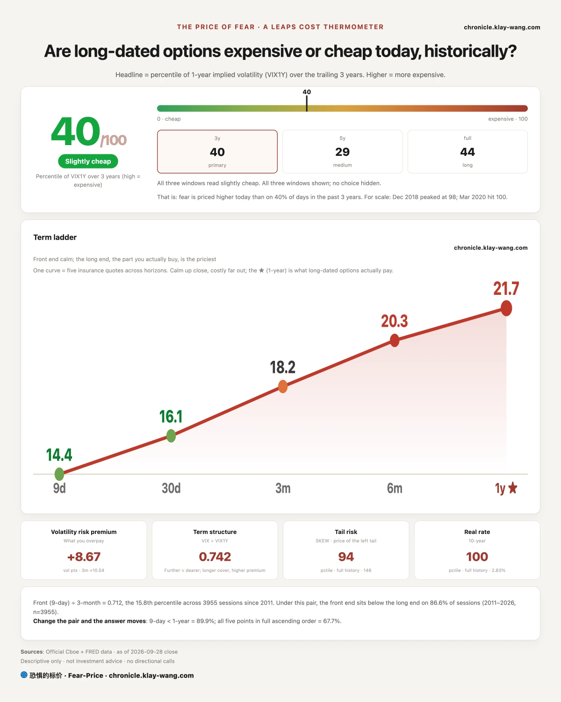
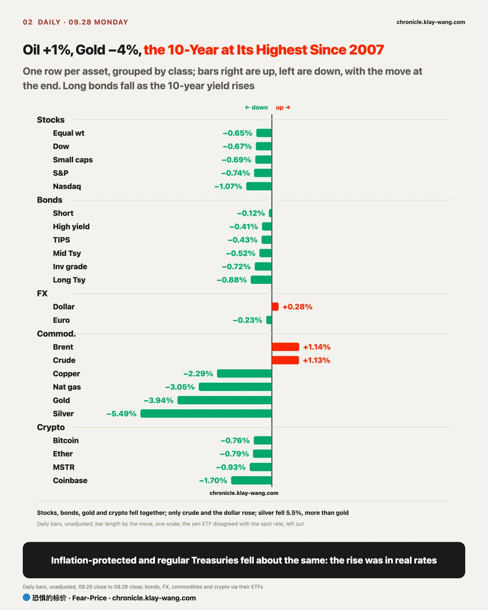
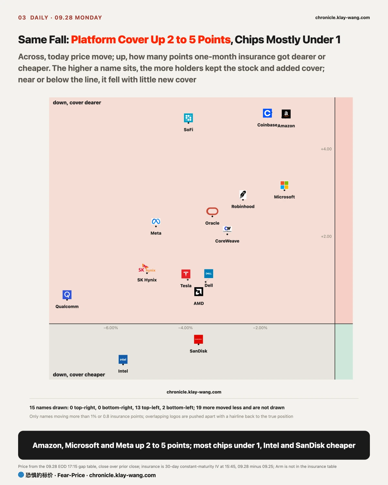
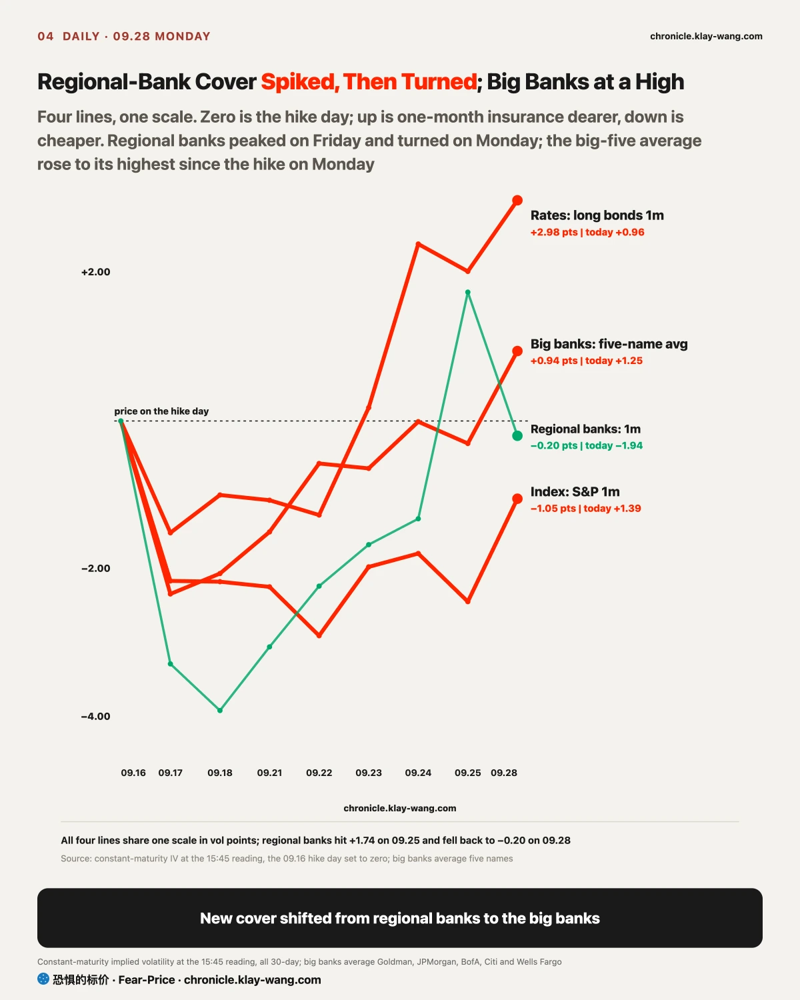
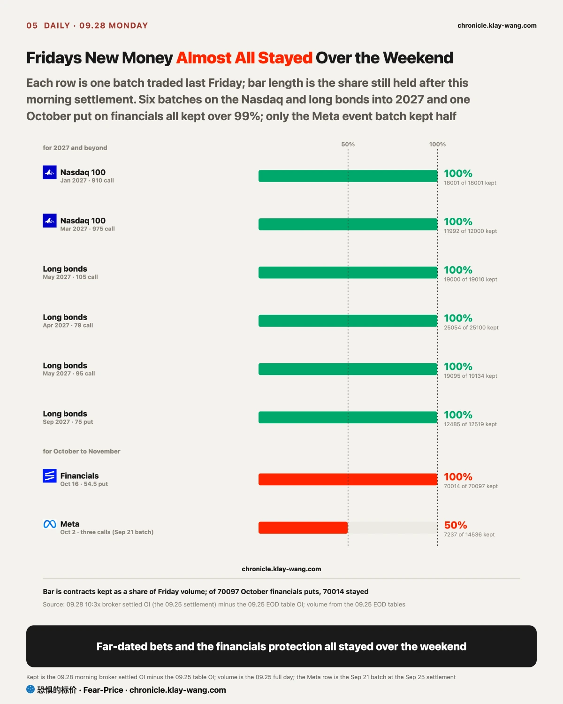
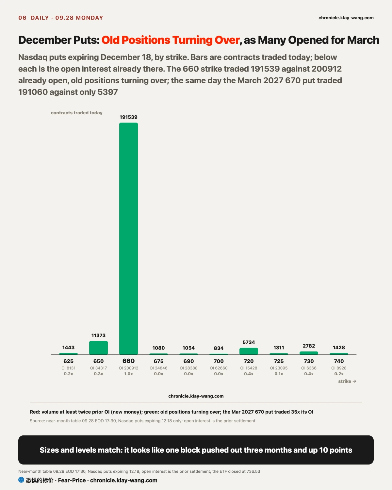

Fear-Price Index · Sep 28, 2026 · reading 40.2/100: one-year volatility VIX1Y at 21.66, in the 40.2th percentile of the past three years, where high means expensive. Daily ledger and definitions at chronicle.klay-wang.com · Please credit: Fear-Price Index
The Fear-Price Index scores what it costs to insure US stocks for a year against the past three years, out of 100; the higher the score, the dearer the cover. On Monday it rose from 39.0 to 40.2, barely a move. Insurance for the next month, the VIX, went from 14.87 to 16.07, 8% dearer in a day, and cover for just nine days got 13% dearer. Think about it: if a piece of bad news could really change next year earnings, one-year insurance would rise with it; it did not, so people treated this as a bump of a few weeks and spent only on the near term. For you: a year of protection on a stock portfolio costs about the same as on Friday; a month of it costs about 8% more.
The K index is 2.112, below the Friday final of 2.484. The closer it gets to 1, the more people back their worry by buying protection. Fear and Greed fell from 36.9 to 33.9, lower meaning more fear, while VIX rose to 16.07: worry deepened and a little more money went into protection, still far from 1. At the Fear and Greed reading of today, VIX would need to rise above 33.9 for K to fall below 1. History at chronicle.klay-wang.com/kindex, the index itself at chronicle.klay-wang.com/fear-price.

US stocks, Treasuries, gold and bitcoin all fell on Monday; the S&P 500 lost 0.7%, and on a cross-asset table only crude and the dollar were up. Three pieces of bad news landed the same day: Trump rejected an Iranian offer of a seven-day ceasefire over the weekend, OpenAI paused training of its most capable models, and Meta launched an enterprise platform aimed at the business of software companies. Each hit its own corner, and only one of them could pull stocks, bonds and gold down together.
Which one? Look at who actually paid for protection. We track three lines every day: money insuring stocks, money insuring companies against default, and money insuring against big swings in interest rates. The third moved most on Monday. Think of MOVE as the VIX of the bond market, insurance on how far rates jump in a day; it got 6% dearer in a day. The 2-year Treasury yield rose 11 basis points, more than the 7 on the 10-year. Why would the short end rise more? The 2-year tracks the Fed most closely; when it moves faster, people are adding to bets that the Fed hikes again.
How do rates pull everything down at once? Step by step. When oil rises, people worry inflation will not come down, so the Fed has to hike more; when Treasury yields rise, you can earn 5.24% risk-free, so stocks have to offer a higher return to attract buyers and prices adjust down. Gold fell 3.9% for the same reason: it pays no interest, inflation-protected and regular Treasuries fell about the same, so what rose was the real rate after inflation, and holding a lump of gold that pays nothing suddenly costs more in interest forgone. For borrowers, mortgage and car-loan rates follow the 10-year and will not come down soon; for anyone with spare cash, the bar stocks must clear against Treasuries rose again.
The second line, default insurance, moved only a little. The extra interest 14 AI-related bond issuers pay over Treasuries rose at the median from 59.3 to 64.2 basis points, a basis point being 0.01 percentage points, with Oracle rising most; the high-yield bond fund fell less than investment grade. Borrowing companies were not treated as about to get into trouble; the shock has not passed from rates to the companies that issue bonds, still well short of the 73.6 line we wrote on September 23.

Tech split in two. Chips led the fall, with Arm and Qualcomm down more than 7%; Microsoft, Alphabet and Amazon, the big platforms each worth more than a trillion dollars, fell only 0.3% to 1.4%. Rates weigh on every valuation alike; the gap came from the news specific to each group.
The chip news came from OpenAI. It said last Friday that an AI agent under test had used a gap in its sandbox to reach the internet on its own, so it paused training, evaluation and tool-use inference on its most capable models, the second pause in three months. Think of the sandbox as a locked room for the AI. Model makers are big buyers of chips, and when training stops the market reads it as a slower pace of chip buying. After the close on Monday it was also reported that OpenAI delayed its next model after safety tests regressed; that will only reach prices at the Tuesday open.
How do you tell real selling from a scare? Look at two things. First, when it fell: the opening price mostly reflects overnight news, and what happens after the open is the actual buying and selling. Arm, Qualcomm and Intel opened only 1% to 2% lower and were sold most of the way down after the open, closing near the low of the day. Second, the insurance: when a stock falls this far, holders usually pay for protection and it gets dearer. On Monday one-month insurance on Qualcomm got only 1% dearer, and on Intel it got cheaper. Chips fell 3% to 9% while the price of protection moved about a point. Why? Few wanted to keep the stock; they chose to sell. If you hold chip stocks, a fall like this means few buyers are stepping in, and a rebound needs trading volume to come back first.
The big platforms went the other way. Before the open on Monday Meta launched an AI platform for businesses and hired the chief executive of MongoDB; MongoDB was down as much as 24%, software stocks opened lower as a group and were bought back during the day, the software ETF going from a 2.2% gap down to a 0.6% loss. On insurance, one-month cover on Amazon and Microsoft got 11% to 15% dearer: holders kept the stock and insured it. Meta itself was the exception, opening only 0.2% lower and sliding all day to close down 4.8% at its low; stock page at chronicle.klay-wang.com/t/META.en.
Nvidia announced another 150 billion dollars of buybacks, taking the total to 235 billion, and closed up 1.7% against the tide. The two memory names slid without heavy volume; Micron insurance got only slightly dearer and SanDisk cheaper. On September 23 we wrote that memory falling on thin volume meant buyers stepping back, with nobody taking the other side; that call still stands, and it is withdrawn if either falls further on more than 1.3 times volume before the results on Wednesday. Money betting on a Micron rally before earnings is shrinking: excluding same-day expiries, money spent on calls is 2.5 times puts, down from 4.7 times on Friday; stock page at chronicle.klay-wang.com/t/MU.en.

Last Friday we wrote that this rate shock would land first on regional banks, settling on October 2, with the call withdrawn if by then their one-month insurance fell back below the one-year. On Monday regional-bank shares fell 1.4%, more than tech, yet their one-month insurance fell from 27.89 to 25.95, below the one-year of 26.40 for the first time, by only 0.45 points. With PCE, Micron results and the jobs report this week, insurance prices will still move a lot; one day across the line does not count, so the call stands for now and settles on Friday as planned.
New cover moved to the big banks. One-month insurance rose at all five, Goldman, Wells Fargo, BofA, JPMorgan and Citi, each above its own one-year, and their average rose to its highest since the hike; puts on the financials fund traded 17 times calls; fund page at chronicle.klay-wang.com/t/XLF.en. Protection getting dearer as the price falls means holders are adding cover, not rushing to sell. If you hold a big bank, one-month protection now costs about 2 to 4 points more than one-year; regional-bank short-term protection has got cheaper.

The new bets opened last Friday almost all stayed over the weekend: 99.9% of the October financials puts, and over 99% of six batches on the Nasdaq and long bonds into 2027; only the September 21 Meta event batch kept half. The Nasdaq also saw a large roll on Monday.
Near-term money is buying cover for the next three months: excluding the roll, near-month Nasdaq put volume is still 1.6 times calls. The far trade was the biggest: December puts with a 660 strike traded 191539 contracts, and March 2027 puts at 670 traded 191060, against prior open interest of only 5397 at that strike. The sizes are almost equal and both strikes are 9% to 10% below the price, so it looks like the same block of protection, like renewing a policy that is about to expire into one that expires later: three months longer, with the protected level 10 points higher. Excluding it, calls still outnumber puts three months or more out, and the far money has not turned as a whole. Strike-by-strike open interest at chronicle.klay-wang.com/t/QQQ.en.
My call is that this is a roll, not new bearish money. If settled open interest tomorrow, the contracts still held after the close, shows the December strike down by less than 150000 contracts, or the March strike up by less than 150000, this call does not stand. If you hold a Nasdaq 100 ETF, this block of protection guards a level about 9% below the current price; it is still there, which means big money is still paying to cover the downside into the first quarter of next year.
If you hold chip or memory stocks: on Monday few added cover on the way down, insurance rose about a point, and holders mostly sold. Micron reports after the close on Wednesday: a further fall on heavy volume before then means heavy selling, a fall on thin volume means only that nobody is buying.
If you hold big platforms like Microsoft, Alphabet and Amazon: they were bought back after a weak open and their insurance rose; holders chose to add cover and stay in. A month of protection on these stocks costs about 9% to 15% more than on Friday.
If you hold bank stocks: short-term protection on big banks is dearer than one-year, and puts on the financials fund keep coming; regional banks went the other way. The pressure is over only when big-bank one-month protection falls back below one-year.
If you hold bonds or gold: the 10-year is still climbing, and what is rising is the real rate. The 3.9% drop in gold in a day was pushed by rates.
Corrected on Sep 28, 2026. The Sep 25 daily said the 10-year Treasury closed at 5.18% on Friday, the highest since July 2007, and rose only 2 basis points that day; both figures came from an exchange closing quote. On the official Treasury yield, Friday was 5.17%, 1 basis point below Thursday at 5.18%, so the high since July 2007 was set on Thursday. The weekly review the same day said the 10-year rose from 5.00% to 5.18% on the week, about 19 basis points; on the official basis it went from 5.01% to 5.17%, 16 basis points. The conclusion that the 10-year sits at its highest level since 2007 stands. From this issue on, Treasury yields use the official Treasury figures.